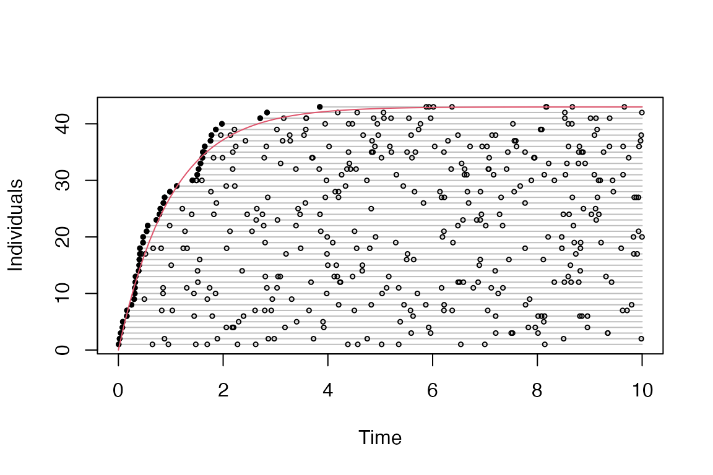
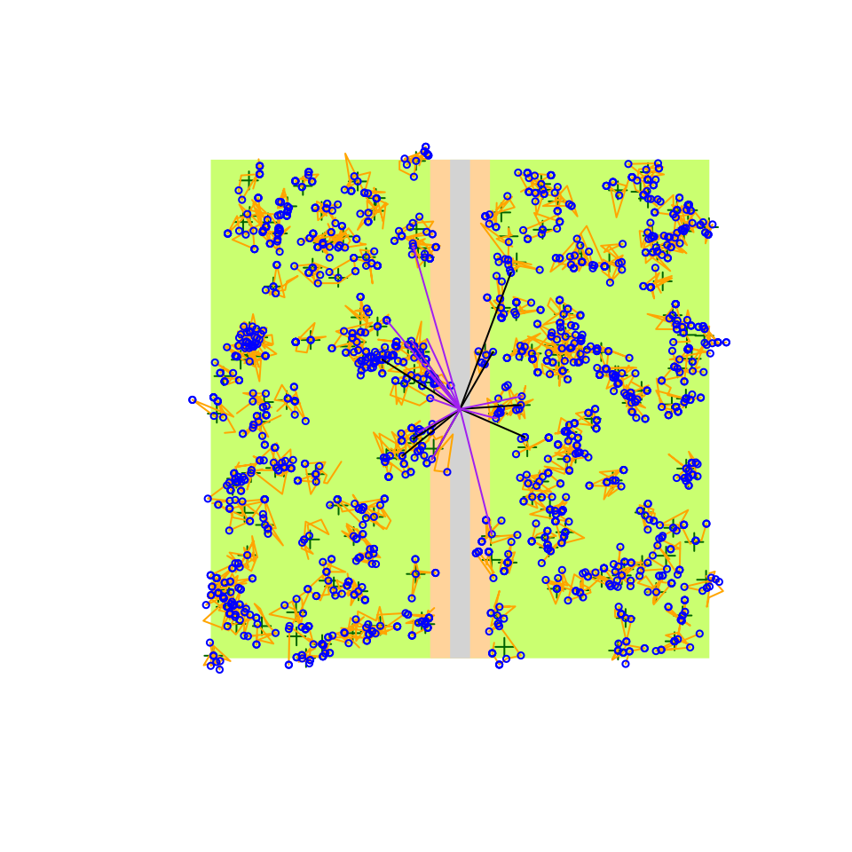

Introductory stats books begin with the coin flip to introduce the binomial distribution. In R we can easily simulate an outcome from such a random variable doing something like this:
p <- 0.5
Y <- rbinom(1, size = 1, prob = p)But a coin flip in reality is a lot more complicated: we might consider the initial force, the height of the toss, the spin, and the weight of the coin.
Bird behavior combined with the observation process presents a more complicated system, that is often treated as a mixture of a count distribution and a detection/nondetection process, e.g.:
D <- 2 # individuals / unit area
A <- 1 # area
p <- 0.8 # probability of availability given presence
q <- 0.5 # probability of detection given availability
N <- rpois(1, lambda = A * D)
Y <- rbinom(1, size = N, prob = p * q)This looks not too complicated, corresponding to the true abundance
being a random variables
,
while the observed count being
.
This is the exact simulation that we need when we want to make sure that
an estimator can estimate the model parameters
(lambda and prob here). But such probabilistic
simulations are not very useful when we are interested how well the
model captures important aspects of reality.
Going back to the Poisson–Binomial example, N would be a
result of all the factors influencing bird abundance, such as
geographical location, season, habitat suitability, number of
conspecifics, competitors, or predators. Y however would
largely depend on how the birds behave depending on timing, or how an
observer might detect or miss the different individuals, or count the
same individual twice, etc.
Therefore the package has layers, that by default are conditionally independent of each other. This design decision is meant to facilitate the comparison of certain settings while keeping all the underlying realizations identical, thus helping to pinpoint effects without the extra variability introduced by all the other effects.
The conditionally independent layers of a bSims realization are the following, with the corresponding function:
- landscape (
bsims_init), - population (
bsims_populate), - behavior with movement and vocalization events
(
bsims_animate), - the physical side of the observation process
(
bsims_detect), and - the human aspect of the observation process
(
bsims_transcribe).
See this example as a sneak peek that we’ll explain in the following subsections:
library(bSims)
phi <- 0.5 # singing rate
tau <- 1:3 # detection distances by strata
tbr <- c(3, 5, 10) # time intervals
rbr <- c(0.5, 1, 1.5) # count radii
l <- bsims_init(extent=10, # landscape
road=0.25, edge=0.5)
p <- bsims_populate(l, # population
density=c(1, 1, 0))
e <- bsims_animate(p, # events
vocal_rate=phi,
move_rate=1, movement=0.2)
d <- bsims_detect(e, # detections
tau=tau)
x <- bsims_transcribe(d, # transcription
tint=tbr, rint=rbr)
get_table(x) # removal table
#> 0-3min 3-5min 5-10min
#> 0-50m 0 0 0
#> 50-100m 0 0 0
#> 100-150m 0 0 0
op <- par(mfrow=c(2,3), cex.main=2)
plot(l, main="Initialize")
plot(p, main="Populate")
plot(e, main="Animate")
plot(d, main="Detect")
plot(x, main="Transcribe")
par(op)Landscape
The bsims_ini function sets up the geometry of a local
landscape. The extent of the landscape determines the edge
lengths of a square shaped area. With no argument values passed, the
function assumes a homogeneous habitat (H) in a 10 units x 10
units landscape, 1 unit is 100 meters. Having units this way allows
easier conversion to ha as area unit that is often used in the North
American bird literature. As a result, our landscape has an area of 1
km.
The road argument defines the half-width of the road
that is placed in a vertical position. The edge argument
defines the width of the edge stratum on both sides of the road. Habitat
(H), edge (E), and road (R) defines the 3 strata that we refer to by
their initials (H for no stratification, HER for all 3 strata
present).
The origin of the Cartesian coordinate system inside the landscape is
centered at the middle of the square. The offset argument
allows the road and edge strata to be shifted to the left (negative
values) or to the right (positive values) of the horizontal axis. This
makes it possible to create landscapes with only two strata. The
bsims_init function returns a landscape object (with class
‘bsims_landscape’).
(l1 <- bsims_init(extent = 10, road = 0, edge = 0, offset = 0))
#> bSims landscape
#> 1 km x 1 km
#> stratification: H
(l2 <- bsims_init(extent = 10, road = 1, edge = 0, offset = 0))
#> bSims landscape
#> 1 km x 1 km
#> stratification: HR
(l3 <- bsims_init(extent = 10, road = 0.5, edge = 1, offset = 2))
#> bSims landscape
#> 1 km x 1 km
#> stratification: HER
(l4 <- bsims_init(extent = 10, road = 0, edge = 5, offset = 5))
#> bSims landscape
#> 1 km x 1 km
#> stratification: HE
op <- par(mfrow = c(2, 2))
plot(l1, main = "Habitat")
points(0, 0, pch=3)
plot(l2, main = "Habitat & road")
lines(c(0, 0), c(-5, 5), lty=2)
plot(l3, main = "Habitat, edge, road + offset")
arrows(0, 0, 2, 0, 0.1, 20)
lines(c(2, 2), c(-5, 5), lty=2)
points(0, 0, pch=3)
plot(l4, main = "2 habitats")
arrows(0, 0, 5, 0, 0.1, 20)
lines(c(5, 5), c(-5, 5), lty=2)
points(0, 0, pch=3)
par(op)Population
The bsims_populate function populates the
landscape we created by the bsims_init function, which is
the first argument we have to pass to bsims_populate. The
function returns a population object (with class ‘bsims_population’).
The most important argument that controls how many individuals will
inhabit our landscape is density that defines the expected
value of individuals per unit area (1 ha). By default,
density = 1
()
and we have 100 ha in the landscape
()
which translates into 100 individuals on average
().
The actual number of individuals in the landscape might deviate from
this expectation, because
is a random variable
().
The abund_fun argument controls this relationship between
the expected
()
and realized abundance
().
The default is a Poisson distribution:
bsims_populate(l1)
#> bSims population
#> 1 km x 1 km
#> stratification: H
#> total abundance: 116Changing abund_fun can be useful to make abundance
constant or allow under or overdispersion, e.g.:
summary(rpois(100, 100)) # Poisson variation
#> Min. 1st Qu. Median Mean 3rd Qu. Max.
#> 72.00 94.75 100.50 101.01 107.25 130.00
summary(MASS::rnegbin(100, 100, 0.8)) # NegBin variation
#> Min. 1st Qu. Median Mean 3rd Qu. Max.
#> 0.0 15.0 64.0 105.8 158.2 567.0
negbin <- function(lambda, ...) MASS::rnegbin(1, lambda, ...)
bsims_populate(l1, abund_fun = negbin, theta = 0.8)
#> bSims population
#> 1 km x 1 km
#> stratification: H
#> total abundance: 58
## constant abundance
bsims_populate(l1, abund_fun = function(lambda, ...) lambda)
#> bSims population
#> 1 km x 1 km
#> stratification: H
#> total abundance: 100Once we determine how many individuals will populate the landscape,
we have control over the spatial arrangement of the nest location for
each individual. The default is a homogeneous Poisson point process
(complete spatial randomness). Deviations from this can be controlled by
the xy_fun. This function takes distance as its only
argument and returns a numeric value between 0 and 1. A function
function(d) reurn(1) would be equivalent with the Poisson
process, meaning that every new random location is accepted with
probability 1 irrespective of the distance between the new location and
the previously generated point locations in the landscape. When this
function varies with distance, it leads to a non-homogeneous point
process via this accept-reject algorithm. The other arguments
(margin, maxit, fail) are passed
to the underlying accepreject function to remove edge
effects and handle high rejection rates.
In the next example, we fix the abundance to be constant (i.e. not a random variable, ) and different spatial point processes:
D <- 0.5
f_abund <- function(lambda, ...) lambda
## systematic
f_syst <- function(d)
(1-exp(-d^2/1^2) + dlnorm(d, 2)/dlnorm(exp(2-1),2)) / 2
## clustered
f_clust <- function(d)
exp(-d^2/1^2) + 0.5*(1-exp(-d^2/4^2))
p1 <- bsims_populate(l1, density = D, abund_fun = f_abund)
p2 <- bsims_populate(l1, density = D, abund_fun = f_abund, xy_fun = f_syst)
p3 <- bsims_populate(l1, density = D, abund_fun = f_abund, xy_fun = f_clust)
distance <- seq(0,10,0.01)
op <- par(mfrow = c(3, 2))
plot(distance, rep(1, length(distance)), type="l", ylim = c(0, 1),
main = "random", ylab=expression(f(d)), col=2)
plot(p1)
plot(distance, f_syst(distance), type="l", ylim = c(0, 1),
main = "systematic", ylab=expression(f(d)), col=2)
plot(p2)
plot(distance, f_clust(distance), type="l", ylim = c(0, 1),
main = "clustered", ylab=expression(f(d)), col=2)
plot(p3)
par(op)The get_nests function extracts the nest locations.
get_abundance and get_density gives the total
abundance
()
and density
(,
where
is extent^2) in the landscape, respectively.
If the landscape is stratified, that has no effect on density unless
we specify different values through the density argument as
a vector of length 3 referring to the HER strata:
D <- c(H = 2, E = 0.5, R = 0)
op <- par(mfrow = c(2, 2))
plot(bsims_populate(l1, density = D), main = "Habitat")
plot(bsims_populate(l2, density = D), main = "Habitat & road")
plot(bsims_populate(l3, density = D), main = "Habitat, edge, road + offset")
plot(bsims_populate(l4, density = D), main = "2 habitats")
par(op)Behavior
The bsims_animate function animates the
population created by the bsims_populate function.
bsims_animate returns an events object (with class
‘bsims_events’). The most important arguments are governing the
duration of the simulation in minutes, the vocalization
(vocal_rate), and the movement (move_rate)
rates as average number of events per minute.
We can describe these behavioral events using survival modeling terminology. Event time () is a continuous random variable. In the simplest case, its probability density function is the Exponential distribution: . The corresponding cumulative distribution function is: , giving the probability that the event has occurred by duration . The parameter is the rate of the Exponential distribution with mean and variance .
In survival models, the complement of is called the survival function (, ), which gives the probability that the event has not occurred by duration . The hazard function () defines the instantaneous rate of occurrence of the event (risk, the density of events at divided by the probability of surviving). The cumulative hazard (cumulative risk) is the sum of the risks between duration 0 and ().
The simplest survival distribution assumes constant risk over time (), which corresponds to the Exponential distribution. The Exponential distribution also happens to describe the lengths of the inter-event times in a homogeneous Poisson process (events are independent, it is a ‘memory-less’ process).
bsims_animate uses independent Exponential distributions
with rates vocal_rate and move_rate to
simulate vocalization and movement events, respectively. The
get_events function extracts the events as a data frame
with columns describing the location (x, y)
and time (t) of the events (v is 1 for
vocalizations and 0 otherwise) for each individual (i gives
the individual identifier that links individuals to the nest
locations)
l <- bsims_init()
p <- bsims_populate(l, density = 0.5)
e1 <- bsims_animate(p, vocal_rate = 1)
head(get_events(e1))
#> x y t v a i
#> 1 -1.0695308 -0.7160919 0.005626468 1 108 10
#> 2 2.4040573 1.3196873 0.022987967 1 314 36
#> 3 1.9208075 2.2174483 0.044264103 1 276 21
#> 4 -1.9400019 1.1727845 0.076256107 1 123 9
#> 5 -2.0071394 -3.4967963 0.084058107 1 178 3
#> 6 -0.6696711 -4.1261427 0.161096144 1 86 6
plot(get_events(e1))
curve((1-exp(-1*x)) * get_abundance(e1), col=2, add=TRUE)
There are no movement related events when move_rate = 0,
the individuals are always located at the nest, i.e. there is no within
territory movement. If we increase the movement rate, we also have to
increase the value of movement, that is the standard
deviation of bivariate Normal kernels centered around each nest
location. This kernel is used to simulate new locations for the movement
events.
e2 <- bsims_animate(p, move_rate = 1, movement = 0.25)
op <- par(mfrow = c(1, 2))
plot(e1, main = "Closure")
plot(e2, main = "Movement")
par(op)Individuals in the landscape might have different vocalization rates
depending on, e.g., breeding status. Such heterogeneity can be added to
the simulations as a finite mixture: vocal_rate and
move_rate can be supplied as a vector, each element giving
the rate for the groups. The mixture argument is then used
to specify the mixture proportions.
e3 <- bsims_animate(p,
vocal_rate = c(25, 1), mixture = c(0.33, 0.67))
plot(get_events(e3))
curve((1-0.67*exp(-1*x)) * get_abundance(e3), col=2, add=TRUE)Vocal and movement rates (and corresponding kernel standard deviations) can be defined four different ways:
- a single number: constant behavior patterns, no groups,
- a vector of length
length(mixture): behavior based finite mixture groups, - a vector of length 3 with
mixture = 1: mixtures correspond to HER strata, - or a matrix of dimension 3
length(mixture): HER strata number of behavior based groups.
Strata based groups are tracked by column s, behavior
based groups are tracked as the column g in the output of
get_nests.
Here is how different territory sizes can be achieved in a two-habitat landscape:
plot(bsims_animate(bsims_populate(l4, density = D),
move_rate = c(0.5, 1, 1), movement = c(0, 0.2, 0.2),
mixture = 1), main="Strata based mixtures")Stratum related behavior groups depend on the nest location.
Sometimes it makes sense to restrict movement even further,
i.e. individuals do not land in certain strata (but can cross a stratum
if movement is large enough). For example, we can restrict
movement into the road stratum (this requires density to be 0 in that
stratum):
op <- par(mfrow = c(1, 2))
plot(bsims_animate(bsims_populate(l2, density = D),
move_rate = 1, movement = 0.3,
avoid = "none"), main="Movement not restricted")
plot(bsims_animate(bsims_populate(l2, density = D),
move_rate = 1, movement = 0.3,
avoid = "R"), main="Movement restricted")
par(op)Another way to restrict the movement of individuals is to prevent the
overlap based on a Voronoi tessellation around the nest locations. Note:
we are using the update method here to update the
allow_overlap argument of the previous call, and the plot
method from the deldir package used for
tessellation.
e4 <- update(e2, allow_overlap=FALSE)
op <- par(mfrow = c(1, 2))
plot(e2, main = "Overlap")
plot(e2$tess, add=TRUE, wlines="tess",
showpoints=FALSE, cmpnt_lty=1)
plot(e4, main = "No overlap")
plot(e4$tess, add=TRUE, wlines="tess",
showpoints=FALSE, cmpnt_lty=1)
par(op)We haven’t mentioned the initial_location argument yet.
This allows to override this whole layer and make all individuals fully
available for the other layers applied on top. I.e. it is possible to
study the observation process without any behavioral interference when
initial_location = TRUE.
Detection
The bsims_detect function detects the events
created by the bsims_animate function.
bsims_detect returns a detections object (with class
‘bsims_detections’). The argument xy defines the location
of the observer in the landscape. By default, it is in the middle, but
can be moved anywhere within the bounds of the landscape.
tau is the parameter of the distance function
dist_fun. The distance function
()
describes the monotonic relationship of how the probability of detecting
an individual decreases with distance
().
Detection probability at 0 distance is 1.
The most commonly used distance function is the Half-Normal. This is
a one-parameter function
()
where probability initially remain high, reflecting an increased chance
of detecting individuals closer to the observer
(
is variance of the unfolded Normal distribution,
is the variance of the Half-Normal distribution). Run
run_app("distfunH") to launch a shiny app
to explore different distance functions, like Hazard rate.
The distance function must take distance d as its 1st
argument and the parameter tau is its second argument
(other arguments can be passed as well). E.g. the default is
function(d, tau) exp(-(d/tau)^2), or the Hazard rate
function can be written as
function(d, tau, b=2) 1-exp(-(d/tau)^-b).
Individuals are detected via auditory and visual cues that are
related to vocalization or movement events, respectively. The
event_type argument determines what kinds of events can be
detected, vocalization, movement, or both. Detection here refers to the
Bernoulli process with probability
given the actual linear distance between the individual at that time and
the observer. The get_detections function extracts the
events that are detected, the column d contains the
distances (in 100 m units).
(d1 <- bsims_detect(e2, tau = 2))
#> bSims detections
#> 1 km x 1 km
#> stratification: H
#> total abundance: 43
#> duration: 10 min
#> detected: 14 heard
head(get_detections(d1))
#> x y t v a d f i j
#> 59 1.033834 -0.5436307 0.6992886 1 248 1.1680526 NA 37 37
#> 67 -1.473937 1.0003945 0.7579134 1 350 1.7813703 NA 12 12
#> 70 1.033834 -0.5436307 0.8413722 1 234 1.1680526 NA 37 37
#> 91 -1.088111 -0.3823201 1.1195392 1 287 1.1533228 NA 10 10
#> 104 -2.237350 -1.1170397 1.2695494 1 247 2.5007026 NA 1 1
#> 156 0.751192 -0.5472666 1.8167910 1 143 0.9294032 NA 37 37
plot(d1)The tau argument can be a vector of length 3, referring
to detection distances in the HER strata. When the landscape is
stratified, and detection distances are different among the strata the
bsims_detect function uses a segmented attenuation model
along the linear distance between the bird and the observer. The
run_app("distfunHER") shiny explores the
segmented attenuation.
tau <- c(1, 2, 3, 2, 1)
d <- seq(0, 4, 0.01)
dist_fun <- function(d, tau) exp(-(d/tau)^2) # half normal
#dist_fun <- function(d, tau) exp(-d/tau) # exponential
#dist_fun <- function(d, tau) 1-exp(-(d/tau)^-2) # hazard rate
b <- c(0.5, 1, 1.5, 2) # boundaries
op <- par(mfrow=c(2, 1))
plot(d, dist_fun2(d, tau[1], dist_fun), type="n",
ylab="g(d)", xlab="d (100 m)", axes=FALSE,
main="Sound travels from left to right")
axis(1)
axis(2)
for (i in seq_len(length(b)+1)) {
x1 <- c(0, b, 4)[i]
x2 <- c(0, b, 4)[i+1]
polygon(c(0, b, 4)[c(i, i, i+1, i+1)], c(0, 1, 1, 0),
border=NA,
col=c("darkolivegreen1", "burlywood1", "lightgrey",
"burlywood1", "darkolivegreen1")[i])
}
lines(d, dist_fun2(d, tau[1], dist_fun))
lines(d, dist_fun2(d, tau[2], dist_fun))
lines(d, dist_fun2(d, tau[3], dist_fun))
lines(d, dist_fun2(d, tau, dist_fun, b), col=2, lwd=3)
plot(rev(d), dist_fun2(d, tau[1], dist_fun), type="n",
ylab="g(d)", xlab="d (100 m)", axes=FALSE,
main="Sound travels from right to left")
axis(1)
axis(2)
for (i in seq_len(length(b)+1)) {
x1 <- c(0, b, 4)[i]
x2 <- c(0, b, 4)[i+1]
polygon(c(0, b, 4)[c(i, i, i+1, i+1)], c(0, 1, 1, 0),
border=NA,
col=c("darkolivegreen1", "burlywood1", "lightgrey",
"burlywood1", "darkolivegreen1")[i])
}
lines(rev(d), dist_fun2(d, tau[1], dist_fun))
lines(rev(d), dist_fun2(d, tau[2], dist_fun))
lines(rev(d), dist_fun2(d, tau[3], dist_fun))
lines(rev(d), dist_fun2(d, tau, dist_fun, rev(4-b)), col=2, lwd=3)
par(op)
e5 <- bsims_animate(
bsims_populate(
bsims_init(road = 0.2, edge = 0.4), density = D),
move_rate = 1, movement = 0.2)
(d2 <- bsims_detect(e5, tau = c(1, 2, 3), event_type = "both"))
#> bSims detections
#> 1 km x 1 km
#> stratification: HER
#> total abundance: 169
#> duration: 10 min
#> detected: 42 seen/heard
head(get_detections(d2))
#> x y t v a d f i j
#> 5 -0.9776217 1.36502323 0.01223095 0 NA 1.6789975 NA 13 13
#> 18 0.7590823 -0.09204728 0.04171113 1 20 0.7646429 NA 93 93
#> 32 0.7199966 -0.18819715 0.08127040 0 NA 0.7441863 NA 93 93
#> 37 -1.5615347 0.99025837 0.09535332 1 352 1.8490544 NA 6 6
#> 43 -0.5873458 0.67553887 0.11854136 0 NA 0.8951692 NA 33 33
#> 80 0.7199966 -0.18819715 0.24575458 1 124 0.7441863 NA 93 93
plot(d2)
If you notice in the plot here, the detections (lines connecting the
observer and the location of the events being detected) are 2 different
colors. That’s because we allowed both vocalization and movement event
types to be detected via the event_type = "both" argument.
Vocalization and movement related detections might have different
detection function characteristics. A flyover might be seen from larger
distances, but it can also depend on body size and coloration relative
to the background. For this reason, the tau argument can
also be a vector of length 2 to provide parameters for vocalization (1st
value) and movement (2nd value) related events.
Let’s use the e2 object (no landscape stratification)
and see how many individuals are hear (not seen), seen (not heard), and
heard & seen:
(d3 <- bsims_detect(e2, tau = c(1.5, 3), event_type = "both"))
#> bSims detections
#> 1 km x 1 km
#> stratification: H
#> total abundance: 43
#> duration: 10 min
#> detected: 30 seen/heard
dtab <- get_detections(d3)
tmp <- with(dtab, table(i, v))
c("heard"=sum(tmp[,"0"] == 0 & tmp[,"1"] > 0),
"seen"=sum(tmp[,"0"] > 0 & tmp[,"1"] == 0),
"heard & seen"=sum(tmp[,"0"] > 0 & tmp[,"1"] > 0))
#> heard seen heard & seen
#> 1 23 6
plot(d3)tau given as a
matrix combines strata (rows) and vocalization/movement (columns)
related parameters, thus allowing the distance function to differ among
the three strata and distinguish the event types.
The sensitivity argument modifies tau
(tau * sensitivity), it can be specified for movement or
vocal events.This is a more didactic way of introducing observer or
sensor related variability into the detection process. It is still the
physical process that is being affected and not the perception.
Transcription
The last layer of simulation is the bsims_transcribe
function that transcribes the detections created by the
bsims_detect function. bsims_transcribe
returns a detections object (with class ‘bsims_transcript’). This layer
refers to the process of the observer assigning detected individuals to
time and distance categories. The tint argument is a vector
containing the endpoints of the time intervals within the total duration
in minutes. rint defines the distance bands in 100 m units,
the maximum can be infinite referring to an unlimited distance
count.
The error argument refers to distance estimation error.
This does not impact the actual distance between the bird and the
observer, but it can lead to misclassification of the distance interval
where the individual is assigned. The argument is the log scale standard
deviation for lognormally distributed random variable representing this
error.
The condition argument defines which events will be
transcribed: "event1" refers to the 1st event (detected or
not), "det1" refers to the 1st detection,
"alldet" means all detections (possibly counting the same
individual multiple times). The event_type argument can be
redefined here, too.
perception creates individual identifiers as perceived
by the observer. The argument defines the perceived number of
individuals relative to the actual number of individuals. It can be a
non-negative number (<1 values lead to under counting, >1 values
lead to over counting), or NULL (observer correctly
identifies all individuals). The algorithm uses the event based
locations in a hierarchical clustering. The dendrogram is cut at a
height corresponding to specified perception level and
group membership is used as individual identifier.
The bsims_transcribe eventually prepares a ‘removal’
table that counts the new individuals in each time/distance interval.
This table is used in removal and distance sampling. The ‘visits’ table
counts individuals by time and distance interval, but counting restarts
in every time interval (i.e. not just the new individuals are counted).
The plot method overlays the distance bands and a representation of the
time intervals.
x <- bsims_transcribe(d1,
tint = c(2, 4, 6, 8, 10),
rint = c(0.5, 1, 1.5, Inf))
x
#> bSims transcript
#> 1 km x 1 km
#> stratification: H
#> total abundance: 43
#> duration: 10 min
#> detected: 14 heard
#> 1st event detected by breaks:
#> [0, 2, 4, 6, 8, 10 min]
#> [0, 50, 100, 150, Inf m]
plot(x)
Statistical validity of the simulations
We can test the validity of the simulations when all of the
assumptions are met (that is the default) in the homogeneous habitat
case. We set singing rate (phi), detection distance
(tau), and density (Den) for the simulations.
Density is in this case unrealistically high, because we are not using
replication only a single landscape. This will help with the
estimation.
phi <- 0.5 # singing rate
tau <- 2 # detection distance
Den <- 10 # density
set.seed(1)
l <- bsims_init()
a <- bsims_populate(l, density=Den)
b <- bsims_animate(a, vocal_rate=phi)
o <- bsims_detect(b, tau=tau)
tint <- c(1, 2, 3, 4, 5)
rint <- c(0.5, 1, 1.5, 2) # truncated at 200 m
(x <- bsims_transcribe(o, tint=tint, rint=rint))
#> bSims transcript
#> 1 km x 1 km
#> stratification: H
#> total abundance: 1014
#> duration: 10 min
#> detected: 289 heard
#> 1st event detected by breaks:
#> [0, 1, 2, 3, 4, 5 min]
#> [0, 50, 100, 150, 200 m]
(y <- get_table(x, "removal")) # binned new individuals
#> 0-1min 1-2min 2-3min 3-4min 4-5min
#> 0-50m 1 4 1 1 1
#> 50-100m 10 5 3 0 1
#> 100-150m 9 5 4 2 0
#> 150-200m 12 5 4 1 1
colSums(y)
#> 0-1min 1-2min 2-3min 3-4min 4-5min
#> 32 19 12 4 3
rowSums(y)
#> 0-50m 50-100m 100-150m 150-200m
#> 8 19 20 23
plot(x)We use the detect package to fit removal model and
distance sampling model to the simulated output. This is handily
implemented in the estimate method for the transcription
objects. First, we estimate singing rate, effective detection distance,
and density based on truncated distance counts:
library(detect)
#> Loading required package: Formula
#> Loading required package: stats4
#> Loading required package: pbapply
#> detect 0.5-0 2025-08-31
cbind(true = c(phi=phi, tau=tau, D=Den),
estimate = estimate(x))
#> Warning in cbind(true = c(phi = phi, tau = tau, D = Den), estimate =
#> estimate(x)): number of rows of result is not a multiple of vector length (arg
#> 1)
#> true estimate
#> density 0.5 9.7047484
#> area 2.0 12.5663706
#> cue_rate 10.0 0.5979187
#> distance_param 0.5 1.8996806Next, we estimate singing rate, effective detection distance, and density based on unlimited distance counts:
rint <- c(0.5, 1, 1.5, 2, Inf) # unlimited
(x <- bsims_transcribe(o, tint=tint, rint=rint))
#> bSims transcript
#> 1 km x 1 km
#> stratification: H
#> total abundance: 1014
#> duration: 10 min
#> detected: 289 heard
#> 1st event detected by breaks:
#> [0, 1, 2, 3, 4, 5 min]
#> [0, 50, 100, 150, 200, Inf m]
(y <- get_table(x, "removal")) # binned new individuals
#> 0-1min 1-2min 2-3min 3-4min 4-5min
#> 0-50m 1 4 1 1 1
#> 50-100m 10 5 3 0 1
#> 100-150m 9 5 4 2 0
#> 150-200m 12 5 4 1 1
#> 200+m 15 9 6 1 3
colSums(y)
#> 0-1min 1-2min 2-3min 3-4min 4-5min
#> 47 28 18 5 6
rowSums(y)
#> 0-50m 50-100m 100-150m 150-200m 200+m
#> 8 19 20 23 34
cbind(true = c(phi=phi, tau=tau, D=Den),
estimate = estimate(x))
#> Warning in cbind(true = c(phi = phi, tau = tau, D = Den), estimate =
#> estimate(x)): number of rows of result is not a multiple of vector length (arg
#> 1)
#> true estimate
#> density 0.5 9.8040797
#> area 2.0 11.2483778
#> cue_rate 10.0 0.5731308
#> distance_param 0.5 1.8922130Deviations from the assumptions and bias in density estimation can be done by systematically evaluating the simulations settings, which we describe in the next section.
Read more in the paper:
Solymos, P. 2023. Agent-based simulations improve abundance estimation. Biologia Futura 74, 377–392 DOI 10.1007/s42977-023-00183-2.